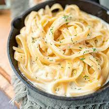

Fettuccine Alfredo

A classic (and healthy) take on the italian staple dish with a rich cheese sauce and fettuccine type of pasta.
Ingredients
- 14 oz pasta Fettuccine
- 2.5 cups cauliflowers florets
- 1 cup of milk
- 1 tablespoon of unsalted butter
- 1/2 cup grated parmigiano
- 3 cloves of garlic
- 2 teaspoon of finely chopped thyme
- Salt + Pepper
Instructions
- Remove and chop the heads of cauliflowers (2 cups)
- Place caulifowers in a medium sauce pan, add milk and unsalted butter, boil over medium heat
- Once boiling, lower heat to medium-low for 12-15 minutes
- Remove from heat
- Add cauliflowers, garlic, thyme, grated parmigiano, and season with salt and pepper in blender and blend until smooth
- Place fettuccine into a pot of boiling water with seasoned geneously with salt
- Drain pasta (Save some pasta water for later)
- Place pasta on a bowl and cover with the sauce, mixed/tossed until evenly mixed
- Serve on a plate